收心
將平日散出去、被情緒和雜事拉著走的心，慢慢收回來。
日常行住坐臥中，常給自己幾分鐘靜心，時刻覺帶自己安心定靜，能常回內心淨土，便能從容自若、有智慧地活出。
這不是要求腦中一片空白，也不是逃離生活。一天的體驗，將從理解、練習到交流，陪你學習覺察念頭與情緒，讓心逐步回到安定、清明、放鬆的狀態。
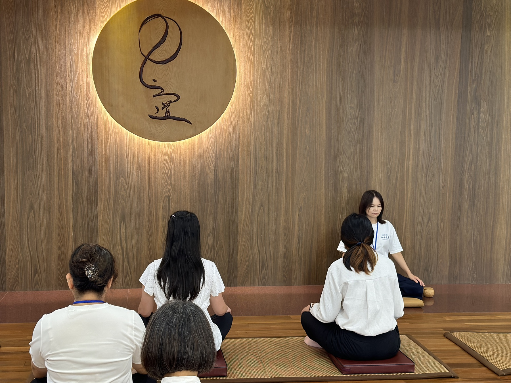
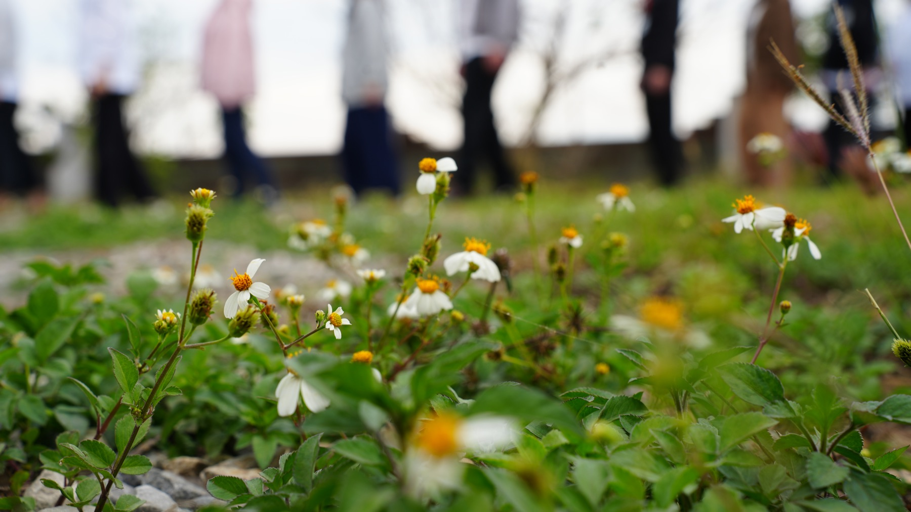
將平日散出去、被情緒和雜事拉著走的心，慢慢收回來。
不逃避念頭，而是看見自己正在想什麼；念頭與情緒生起時，學會覺察並立刻收回觀呼吸。
讓心從浮動、緊繃與混亂中，逐步回到安定、清明而放鬆的生命狀態。
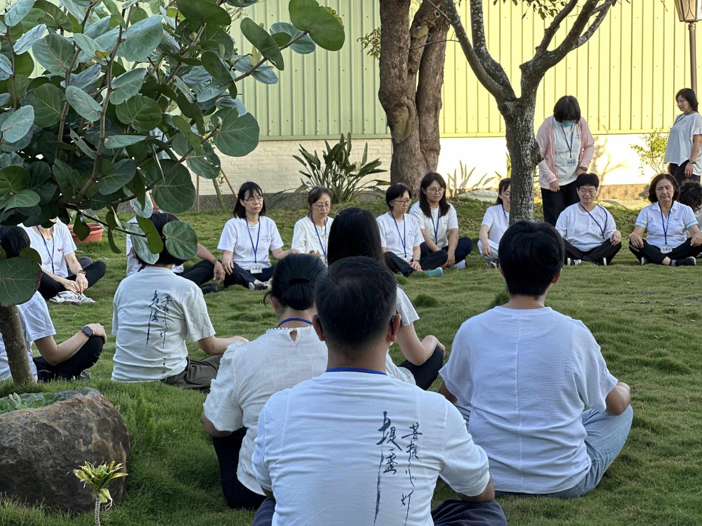
在自然裡安住，也在日常裡練習。
以清楚的基礎說明開始，在循序漸進的實作與交流中，親自感受靜心帶來的轉變。
從晨光裡的行走、室內的觀照，到彼此分享體會。這些真實片刻，是練習發生的地方。
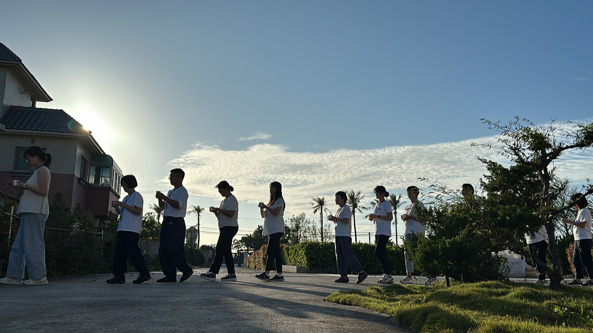
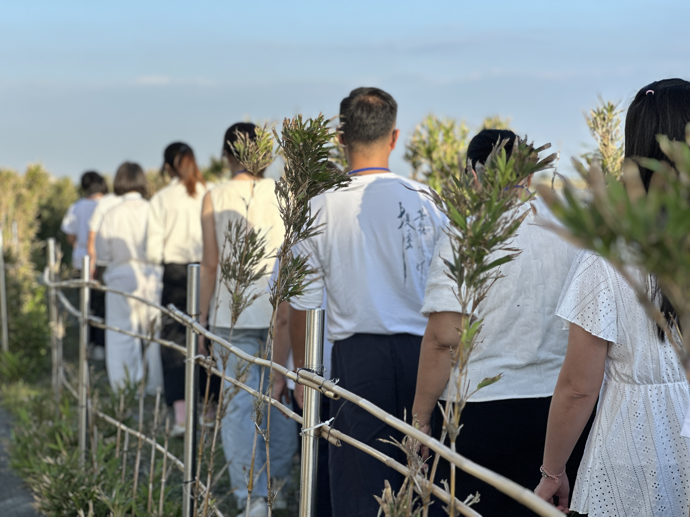
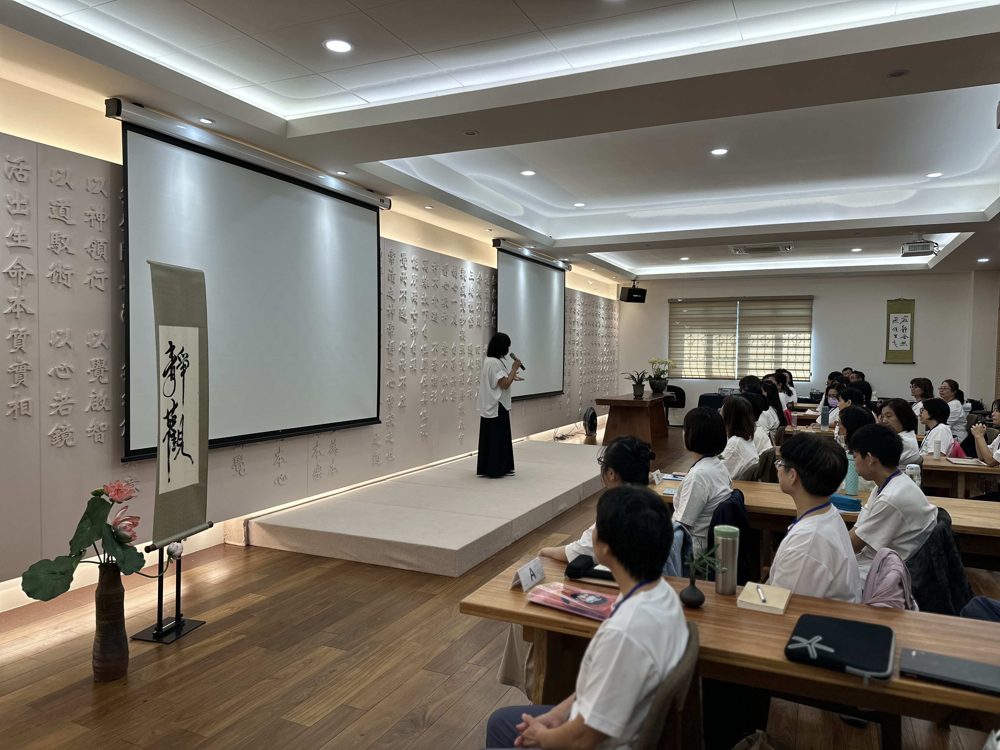
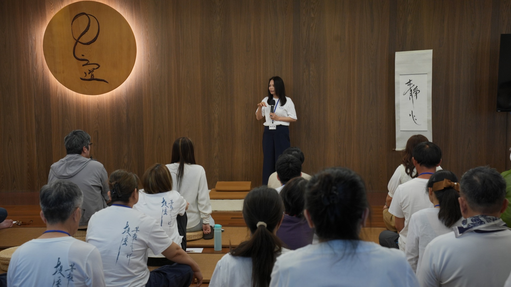
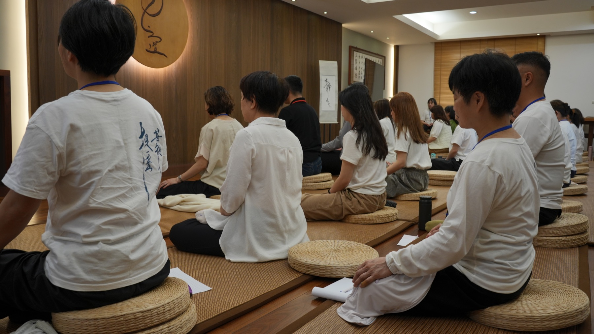
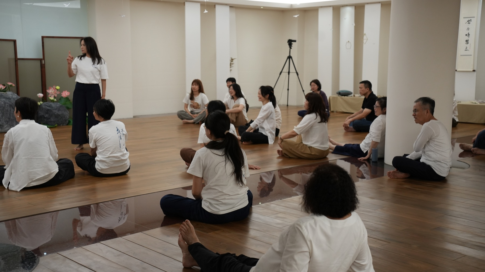
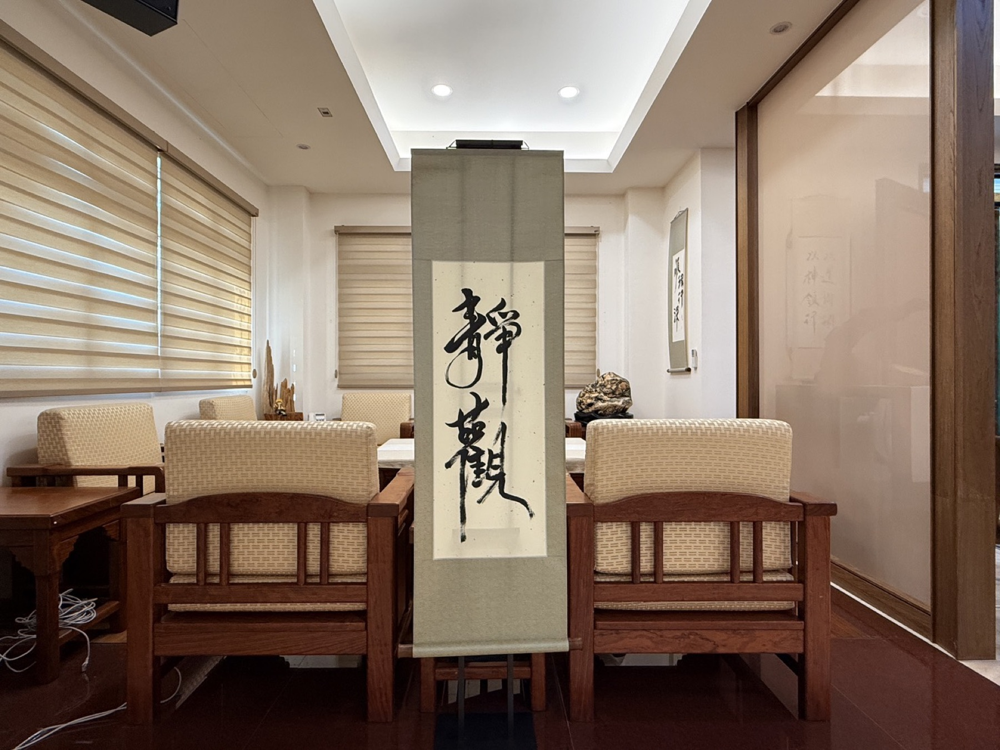
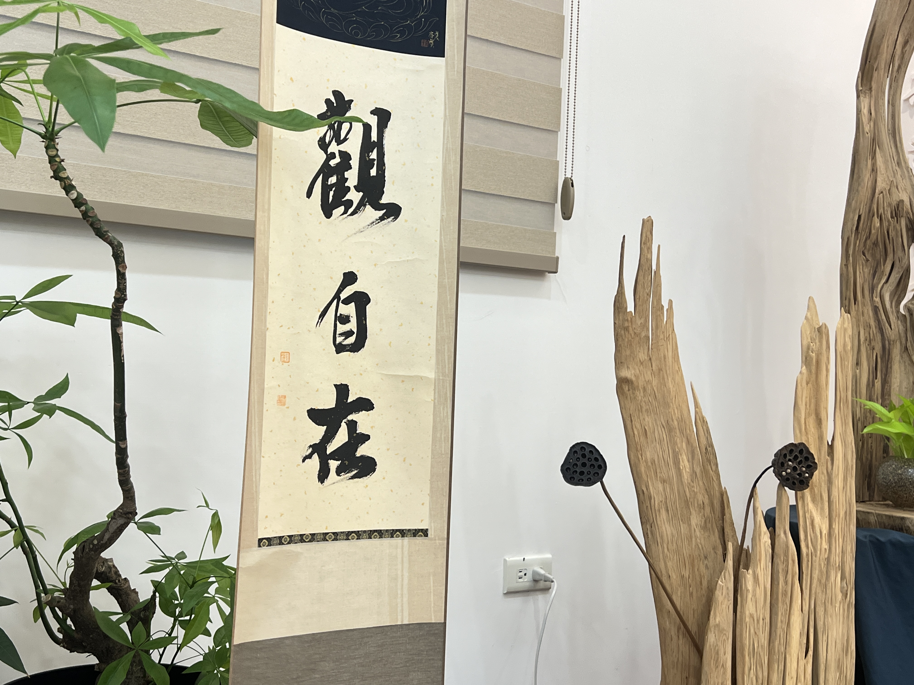

台南市北門區錦湖里渡子頭 8 之 9 號
不限有無靜心修煉基礎
課程不收費，費用為餐費、書院水電等支出